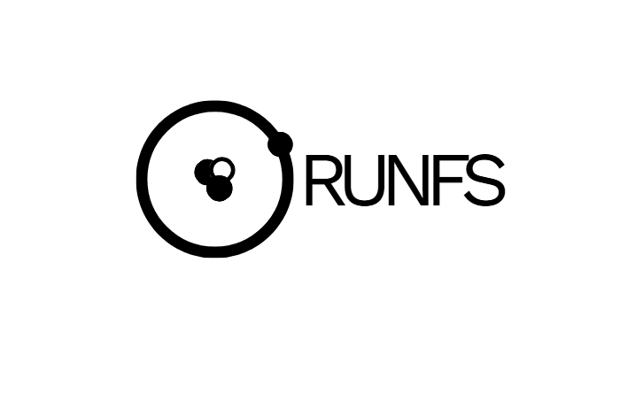

K
Krishaan
President

Rutgers Nuclear Society
RUNFS brings Rutgers students into nuclear science, fusion energy, reactor systems, radiation, research, and policy through a sharp technical community.
About
We are a Rutgers student organization for people curious about the technologies behind clean firm power, medical isotopes, space systems, national laboratories, plasma physics, and advanced reactors.
The club exists to make a demanding field more legible. We connect undergraduates with faculty, labs, alumni, conferences, and each other, then give members room to ask better questions and build real technical confidence.
President
Vice President
Treasurer
Secretary
Math + Tech Chair
Finance Chair
RTQF Co-head
RTQF Co-head
Social Media Chair
Events
Technical talks, club updates, project planning, and member discussion.
Faculty, alumni, industry engineers, plasma scientists, and health physicists.
Labs, research groups, conferences, and regional nuclear organizations.
Radiation demos, public education, collaboration events, and tabling.
Research
Tokamaks, stellarators, diagnostics, materials, and fusion commercialization.
SMRs, molten salts, fuel cycles, safety cases, licensing, and reactor economics.
Instrumentation, shielding, dose, medical applications, and communication.
Clean firm power, public trust, climate planning, and deployment strategy.
Gallery